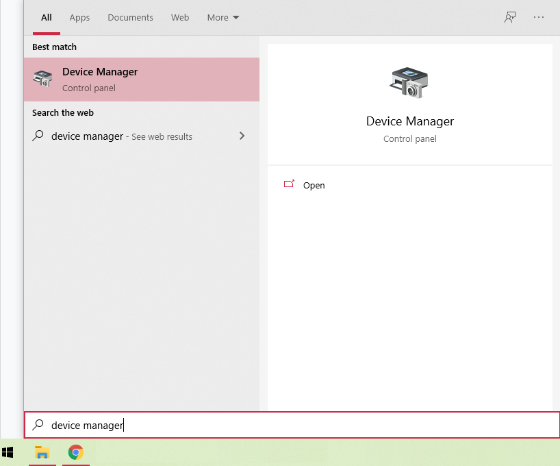
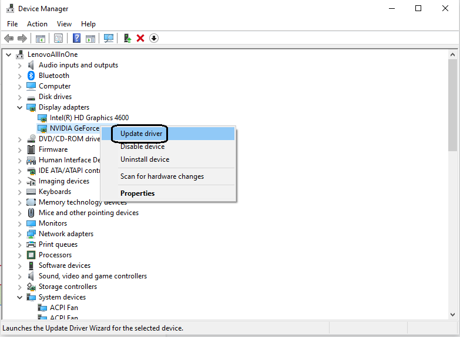

Animaze Desktop: What do I do if I have green stripes across the screen?
Usually, the green stripes across the screen issue is caused either by a GPU that is lower than the minimum required GPU (which is an NVIDIA GeForce GTX760), or by a GPU with outdated drivers.
To resolve this, press the Windows key, type in Device Manager, and hit Open

Click on Display Adapters and then right-click on your GPU and then click on Update driver

If you have more than one GPU on your system, you can choose which GPU is Animaze running on by going to the control center of the other GPU (that you want to set as default) and making it the default display adapter.